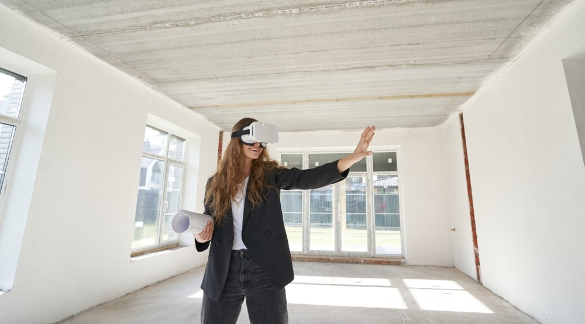

In the engineering field, where precision is most important, VR for engineering drawings acts as a bridge that connects minds and designs and ensures that everyone involved is on the same page.
VR offers immersive visualization, real-time collaboration, enhanced learning and training, error reduction, and improved communication, ultimately paving the way for precision and innovation in the engineering world.
This blog will explore the myriad applications and benefits of VR in mechanical and civil engineering, along with seeing how this immersive technology is shaping the future of design and construction. So, let’s begin.
What is the significance of Engineering Drawings?
Before jumping into the benefits of using VR for improving mechanical and civil engineering drawings, let’s look into the essential role of these technical drawings in the field of engineering.
If you think of them as mere ink on paper, then you are completely wrong.
They are the lifeblood of the design and construction process that provides a common language to architects and engineers. Consider this as the blueprint for the future creations.
These drawings present precisions. Whether you're someone who aims to breathe life into a steam engine design or embark on a complex civil engineering journey, engineering drawings are your guiding light.
The engineering drawings are the only foundation that helps engineers turn their ideas into reality which ensures that the final product meets the desired specifications.
Just like an engineer’s special code that bridges the gap between concept and creation.
VR for Engineering Drawings
VR engineering drawings are an impressive innovation that holds the potential to completely change how engineers and architects approach their projects.
Asking how?
Here are the reasons-
Immersive Visualization
With the integration of VR for product prototyping and design, the way professionals engage with engineering product design.
By wearing a VR headset, engineers can be transported into a virtual world where they can step into their designs, and have a comprehensive look at every nut, bolt, and all the structural details that too within arm’s reach that are visible from each and every conceivable angle.
Just imagine, that every time you are turning your head, you can inspect the finest intricacies of the designs. It's a revelation, a metamorphosis of perception, for VR unravels a level of insight and comprehension that eclipses the confines of two-dimensional renderings.
With VR, engineers have become the architects of the abstract, transcending the boundaries of conventional design. With each exploration in this virtual universe, they gain an instinctive understanding that transcends the confines of mere drawings.
Real-time Collaboration
Every successful engineering project demands collaboration, after all, it is all about teamwork.
The traditional engineering educational setup restricts real-time collaboration. However, virtual reality labs for engineering students have the solution to this problem.
With the use of VR, engineers, and architects throughout the globe can collaborate in real time, no matter where they are.
How?
By wearing the VR headset, they can work on the same project simultaneously. They can share their ideas and insights as if they are working in the same room, even if they are thousands of miles apart.
Such a type of real-time collaboration ensures that each individual is on the same page.
Now engineers and architects can bridge the gap between different locations and time zones. Thus, they are no longer restricted to geographical boundaries.
With this technology, there are high chances of eliminating miscommunication and those high cost errors which ensures that the final product is perfectly aligned with the vision of the project.
Enhanced Learning and Training
In the traditional learning environment, students have to learn about the intricacies of engineering drawing in two dimensions.
But, is it sufficient?
Well, the answer is a NO.
It becomes challenging for the students to learn about engineering drawing concepts. However, the VR world of engineering education bridges this gap with its 3D interactive environment that transforms the abstract lines and symbols of engineering drawings into tangible and interactive models.
By wearing the VR headsets, students can step inside the virtual room where they can explore the complex engineering graphics drawings in a 3D space providing a revolutionary learning experience.
Such learning experiences allow the students to interact with their designs, they can manipulate the components and obtain a holistic understanding of how they approach different elements to fit in the real world.
Not only they can actively participate with their static images and diagrams, but their retention rates are also enhanced.
And, their problem-solving skills?
They are also nurtured.
The learners are allowed to make mistakes. They can perform experiments and refine their design without worrying about real-world consequences, fostering creativity and self-assurance.
Error Reduction
Is there any process that is free of errors?
Well, no!
The designing and construction process in the engineering domain can result in a lot of possible errors.
However, these errors can be harmful to students’ safety or it can be expensive to overcome those errors. Virtual reality overcomes this issue.
VR for engineering drawings significantly reduces the chances of errors in the design phase. It acts as a dynamic and immersive safety net, allowing engineers to identify potential issues before construction even commences.
Asking how?
With virtual reality, the students can simulate real-world conditions and interactions with the design. This includes testing how various elements respond to stress, strain, or other factors that might reveal potential issues.
VR for mechanical engineering allows engineers to experiment with these conditions in a virtual space, making adjustments as needed to mitigate risks.
And what about the cost?
VR for engineering drawings leads to substantial savings in both time and resources by identifying and rectification of errors in the design process.
With the integration of virtual reality for civil engineering, costly rework, and delays can be prevented during the construction phase. Thus, minimizing the waste of materials.
Better Communication
When it comes to engineering drawings, one of the most important aspects is effective communication.
All those symbols and notions used in engineering design act as the bridge between an abstract concept and its real-world manifestation. However, these symbols are confined to the traditional 2D drawings.
However, VR experimental research and design have completely changed the game. It possesses a clarity of design.
By harnessing the power of virtual reality, engineers, architects, and project stakeholders can transcend the limitations of 2D blueprints. VR allows users to interact directly with the design, immersing them in a 3D, dynamic environment.
This interactive experience brings clarity to the design intent, making it easier to grasp complex engineering concepts.
With VR for engineering drawings, communication transcends the boundaries of language and technical jargon. Engineers can walk through their designs with colleagues and clients, pointing out specific details, discussing modifications, and aligning everyone's vision.
It fosters a collaborative environment where ideas flow seamlessly, minimizing the risk of miscommunication and errors.
"Want to Revolutionize Your Engineering Designs? Discover How VR Transforms Mechanical and Civil Engineering Drawings—Make Precision, Efficiency, and Collaboration Exciting!"
Applications of VR in Mechanical and Civil Engineering

The application of VR for engineering drawings is versatile and can be customized for specific fields within engineering:
Mechanical Engineering
VR for mechanical engineering provides a platform for product design, prototyping, and testing in a virtual environment. This not only accelerates the design process but also allows for VR experimental research and design, saving both time and resources.
Civil Engineering
In the field of civil engineering, VR can assist in the design and planning of large-scale structures. Virtual reality for civil engineering allows engineers to visualize the construction process, identify potential challenges, and optimize their designs.
Conclusion
To conclude, as the engineering world continues to evolve, VR for product prototyping and design is set to play an increasingly vital role in the design and construction process.
The ability to interact with engineering drawings in a virtual space is not only a game-changer but also a harbinger of future possibilities.
The integration of VR into engineering is more than just a technological advancement. It's an innovation that empowers engineers, architects, and designers to take their projects to new heights of creativity and precision.
So, whether you're working on mechanical engineering drawings or civil engineering blueprints, VR is the key to unlocking a world of endless possibilities.
In a world where the old adage "seeing is believing" holds true, VR drawings allows us to see and believe in our designs like never before.
It's not just about drawing lines, instead, it's about creating a world where innovation knows no bounds.
So, engineers, architects, and designers, it's time to step into the world of VR for engineering drawings and experience the future of design in all its immersive glory.